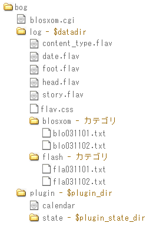
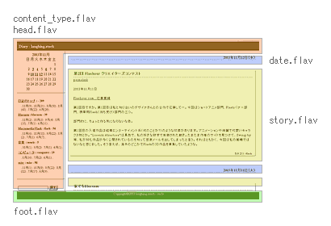

翻訳についてblosxomユーザ向けドキュメント開発者向けドキュメントダウンロード*公式サイトで未執筆 |
訳者が使ってみた感想Blosxomはプロバイダでも多く提供している Perlが動作すれば使える、と言う容易さが魅力です。人気のあるMovable Type等のBlogシステムはデータベースサーバを必要としたりと、通常の（日本の）プロバイダでは利用するのが厳しいことがありますが、Blosxomは多くの場合、動作すると思います。 インストールインストールは結構簡単です。掲示板スクリプトなど、どこかの配布サイトからもらってきて設置した事があるというのであれば雑作も無いでしょう。Perlで自作アプリケーションを作成しているのであればなおさらです。例えその経験が無くても、スクリプトファイル（blosxom.cgi）をテキストエディタで開いてそれを多少編集する勇気、そしてプロバイダを使う場合にはプロバイダの環境の説明をある程度理解できれば設置できると思います。プロバイダの説明を全く理解できない場合は…少しウェブで調べるか分かる人に聞いてみて下さい。 Blosxomを使うと言うことは恐らく、多くの場合はインターネットに公開することが目的かと思います。それにはプロバイダのスペースを使うことになる場合も多いかと思います。まずはプロバイダでホームページを設置できて、かつ独自のCGIスクリプトを使うことができるかを確認してください。これはプロバイダの利用手引きやホームページに書かれています。ホームページを持てないのであれば諦めるしかありませんが、それが可能で、独自CGIスクリプトを使用できるとなればそのほとんどはPerlが利用できると思いますのでBlosxomが動作できる可能性が高くなります。 プロバイダの説明にしたがって、Perlへのパスを確認します。これは #!/usr/perl/bin/perl みたいなやつです。これをblosxom.cgiの1行目で確認して、違っていれば書き換えます。 次に、サーバのどのディレクトリ（フォルダ）にblosxom.cgiを置けば良いのか、プロバイダの説明に従ってください。その場所はcgi-binであったり、貴方のディレクトリのどこでも構わない等、プロバイダによって異なる場合があります。 独自CGIスクリプトをどこにおけば良いかわかった。でも、ここで問題になるかも知れない事項があります。それは、ログデータを置くディレクトリの絶対パスです。Blosxomの設定で$datadirに設定する重要なものです。絶対パスは例えばこのページのURLのように "/www.yk.rim.or.jp/~hoge/blosxom/"のような形とは多くの場合、異なっています。/home/hoge/public_html/blosxomのようになっているかも知れません（リムネットではこれとはかなり異なるものになっています）。プロバイダの利用手引きやホームページの説明を良く読んでください。これを$datadirに適切に設定できないと、Blosxomはログの場所を見つけることができません。 ディレクトリ（フォルダ）にblosxom.cgiを置いたら、$datadirで指定したログ保管ディレクトリをその下に作成し、blosxom.cgiのパーミッションを確認してください。パーミッションはblosxom.cgiを誰が実行させるかを指定するものです。プロバイダによって異なります。私のリムネットでは700になっていますが、プロバイダによっては777であったりするかもしれません。これもプロバイダの説明を読んでください。 Blosxomを使ったウェブログを表示しようとして"Internal Server Error"（エラーに関するもの）と表示された場合は、設定が間違っている可能性があります。設定が間違っていなくてもプロバイダによってはエラーになる場合もありますので、その場合はプロバイダに問い合わせてみてください。  ログBlosxom単体ではログを作成、編集、削除と言った機能は提供していません。wikiedishのようなプラグインを用いるとブラウザでそれらを行うことができるみたいですが、基本はテキストエディタを使います。MacやWindows、Unix系標準のテキストエディタを使ったり、その他のサードパーティ製のテキストエディタを使います（文字のエンコードを変える場合はそれに対応しているテキストエディタを使ってください）。テキストエディタでログを作成したら、FTPクライアントソフト等を使ってサーバにアップロードすると、Blosxomはそれを勝手に見つけて表示してくれます。削除はそのファイルを削除することです。 ログの作成には1つ、決まりがあります。最初の1行がタイトル（題名）になると言うことです。2行目から最後までは本文になります。うっかり1行目から本文を始めてしまうと、ブラウザで見たときに非常に長いタイトルとなって表示されてしまいます。 フレーバーBlosxomではフレーバー（Flavour）と呼ばれるものを使ってページの"見た目"を変更します。 フレーバーとは他のシステムではテンプレートやテーマ等と呼ばれているもので、ページの見た目を決めるものです。Blosxom公式サイトの説明文では"匂い"や"庭"など、本来の花である"ブロッサム"になぞらえて表現している部分もあります。まさに貴方のページの"香り（見た目）"をあらわすものが"フレーバー"です。Blosxomでは貴方独自のフレーバーを作成することも、しかもそれを何種類も用意してページによって使い分けると言うことも可能です。 BlosxomのデフォルトのフレーバーはBlosxom自体（blosxom.cgi）に書かれています。Blosxomをインストールして初めて表示される見た目がこれです。Blosxomはこのフレーバーに従ってブラウザに表示される見た目を決定しています（ブラウザにデータを送ります）。しかし、blosxom.cgiに書かれたフレーバーを変更するのは大変ですし、Blosxomは外部ファイルをフレーバーとして指定できるので特別な理由が無い限りは無駄な作業です。まずはBlosxom公式サイトのFlavour Samplerをダウンロードして、そのファイルの内容を確認してみることをお勧めします（Blosxomのアーカイブにはフレーバーファイルは含まれていません。Macのインストーラ版では含まれているみたいですが）。フレーバーファイルは$datadirに置きます。そしてフレーバーファイルの拡張子をblosxom.cgiの設定で指定します。指定するフレーバーとは、フレーバーファイルの拡張子です。フレーバーファイルの拡張子がフレーバーの名前になります。そうすると、そのフレーバーで表示するようになります。URLに指定して変更する方法もあります。それについてはメインの説明を読んでください。 フレーバーファイルも単なるテキストファイルです。中身はHTMLとフレーバーコンポーネントと言うもので構成されています。それをテキストエディタで編集したり、他にも拡張子（拡張子はフレーバーの名前になります）を変えたものを用意することでページによって見た目を変えることもできます。フレーバーファイルは5種類で1セットとなっており、中身の基本はHTMLですが、それら一つ一つがHTMLとして完結しているわけではありません（常に</html>で終わっているわけではありません）。Blosxomはこの5種類のファイルを繋ぎ合わせて最終的にブラウザで見られるようにします。したがって、例えばホームページ作成ソフトでフレーバーを作成するには、できたHTMLファイルを切り貼りする必要があります。また、必要に応じて適切なフレーバーコンポーネントを埋め込みます。私の日記を例に挙げるとフレーバーはページのレイアウトに関して以下のような構成になっています（flavはフレーバー名です）。  作り方によっては全てのフレーバーファイルを用意するのは面倒かもしれませんが（フッタはいらない等）、Blosxomでは上記の5種類のフレーバーファイルを必要としますので、削除してはいけません。 フレーバーコンポーネントは$で始まるもので（$yr、$title等）、Blosxomの設定や、日付、ログの内容、プラグイン等によってフレーバーに自動的に取り込まれるものです。つまり、$で始まる文字は、ページとして表示されるときに変換されます。例えば、story.flavの中に$titleとあれば、$titleはそのログのタイトル（ログファイルの1行目がタイトル（題名）になる）に置き換わって表示されます。 headフレーバーはページの最初の書式を指定するものなので、<html>などを含むことになります。逆にfootフレーバーはページの最後の書式を指定するので</html>で終わる事になります。 content_typeフレーバーはheadフレーバーにcontent="text/html; charset=Shift_JIS"等と指定してしまえば用を成しませんが、ページによってXMLだったりする場合はcontent_typeフレーバーを適宜切り替えます。storyフレーバーとdateフレーバーは他のフレーバーとは多少、性質が異なります。他のフレーバーはページの表示に一度だけ使われますが、storyフレーバーとdateフレーバーはログを表示するために反復的に使用されます。つまり、storyフレーバーやdateフレーバーで指定した書式は、ログがブラウザで表示される際に、全てのログと日付に適用されますので、リンクをクリックしてページを切り替えて別のフレーバーを適用する、など以外の場合は標準では例えば「特に強調したいログの見た目だけ変える」と言うようなことはできません（そもそも必要ないかもしれませんが）。 content_typeフレーバーはどちらかと言うと特殊ですが、ページの見た目を考えた場合、headフレーバー、dateフレーバー、storyフレーバー、footフレーバーの順に繋ぎ合せて行って、HTMLとして成立していることが条件になります（$で始まるコンポーネントは置き換わります）。 プラグインBlosxom単体（blosxom.cgi）ではログへのコメントやカレンダーと言った機能は提供していません。ログを日付順に表示する程度です。しかし、カレンダーやコメント、トラックバックと言った機能は"プラグイン"によって後から追加することができます。私の日記ではカレンダー、カテゴリ、entries_index、その他を使っています。 プラグインによってはPerlのバージョンやモジュールに依存することがあるかもしれませんが、Raelさんは「特別な条件を必要とするプラグインは作らないで欲しい」と言っていますし、プラグインの作成者もそれを意識していると思います。ですので、もし、すぐに動かなくてもちょっとした修正をすれば動くことも多くあると思いますし、対処の仕方はプラグインファイルの中や作者のサイトに書かれていると思います。 カテゴリパソコンでMicrosoft Word等を使って文書を作成している場合、Windowsであれば良く、"マイドキュメント"に文書を保存するでしょう。場合によってはマイドキュメントに新たにフォルダを作ってそこにしまうこともあるでしょう。Blosxomでのログ作成はそれに似ています。Blosxomの設定で$datadirに指定した場所をWindowsの"マイドキュメント"のような場所と考えれば、$datadirの中に新たにフォルダ（ディレクトリ）を作ってログを保存すると言うのは、先ほどのパソコンでの文書保存に似ています。Blosxomでは$datadirに作成したフォルダ（ディレクトリ）は"カテゴリ"として扱われます。そのため、ログの内容に応じてフォルダ（ディレクトリ）を作成すればログをカテゴリごとに整理できます。カテゴリはBlosxomの標準のフレーバーでは本文の下に表示されます。 その他ログの日付ログを書いてFTPでアップロードすれば表示されると言う簡単さがありますが、私が使ってみて困ったことがあります。それは過去のログを書き直してアップロードすると、アップロードした時点の日付や時間でそのログが表示されてしまうことです。つまり、一番上に表示されてしまうことです。 新しく修正、または加筆したと言う意味ではそれを見てくれる人に知らせる意味では良いかもしれません。しかし私の場合はそうしたくなかったので、どうすれば良いかと考えました。そして、シェルを利用するスクリプトをアップロードしてそれをブラウザで呼び出すと日付を変更すると言うものを最初利用しましたが、私のスキルではファイル一つ一つに対してスクリプト内を変更しなくてはならなかったので、たまにログを変更した場合には事足りましたが、誤って多くのログを上書きしてしまった時にはほとんど絶望的に思えました。 そこでentries_indexプラグインを導入しました。これは、ログの日付をログファイルとして保存しておいて、ログを修正してもそのログファイルに書かれた日付として表示してくれるものです。最初にログをアップロードし、次にBlosxomが起動された際にログファイルにアップロードしたファイルの情報が追記されます。そして次回からはその情報を元にログを表示します。ログファイルに既述される各ログに対する情報は1つ（ファイルへのパスと日付）ですが、ログ（日記）が多くなるとログファイルも大きくなっていきます。 これで修正したログが上に上がってくる心配はなくなりました。ただし、ファイルの日付自体を変更するものではないので、ファイルの本当の日付はアップロードした時になっています。したがって、entries_indexのログファイルを削除すると大変な事になります。 プラグインのパーミッションプラグインのパーミッションを適切に設定しないと、例えばプラグインの保存場所を説明通りの名前で設定した時などはブラウザでプラグインの場所をURLで与えればプラグインの中身が丸見えになる場合があります。また、前述のentries_indexのログファイルやその他のプラグインのテンポラリファイル（ログファイル）もそうです。 http://****/blog/plugins/entries_index http://****/blog/plugins/state/.entries_index.index ****はホスト名等 プラグインやログファイルにはパスなどの情報が含まれている場合があり、もしかすると重要なものが存在するかもしれません。パーミッションを適切に設定することでアクセスできないようにすることができます。私のプロバイダでは600です。 |